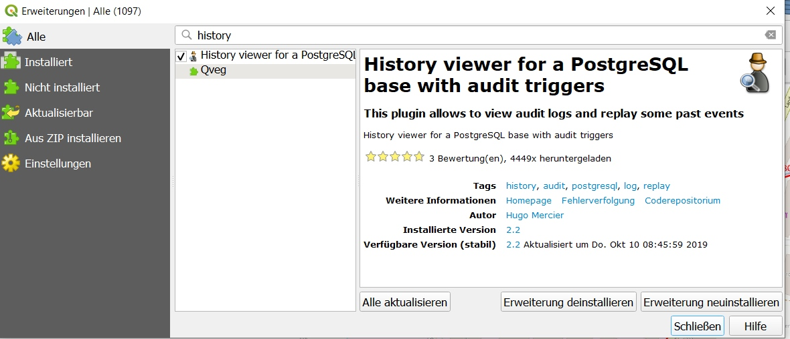
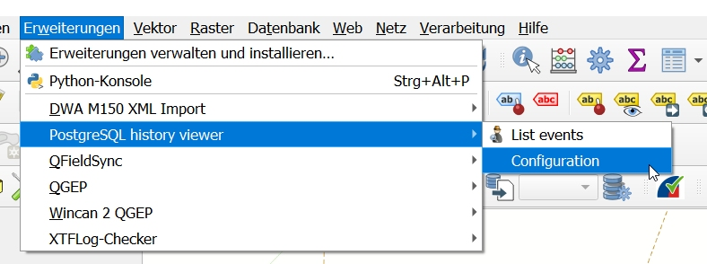
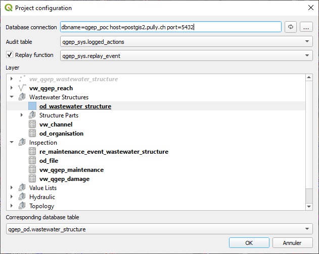
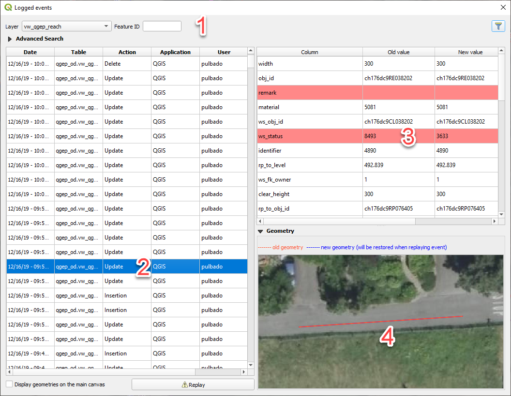
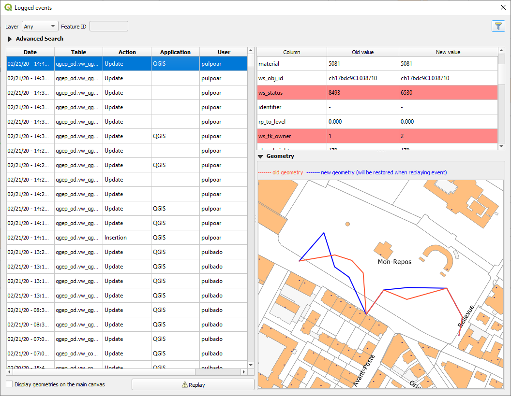
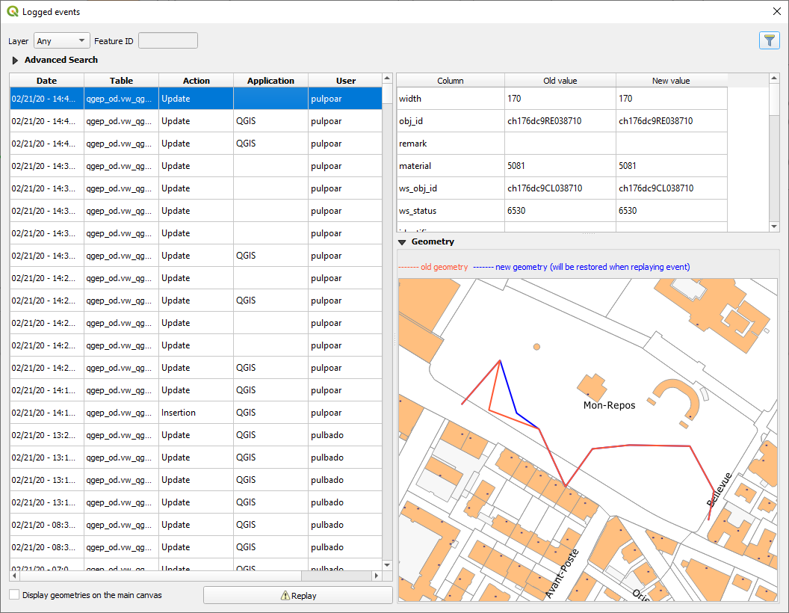

Visualiseur d’historique
Le plugin PostgresSQL history viewer <https://github.com/qwat/pg-history-viewer>_ vous permet de consulter les modifications apportées à la base de données TWW.
Installez le plugin depuis le dépôt de plugins QGIS.

Configuration du plugin

Tout d’abord, vous devez configurer le plugin comme suit :

Configuration de la base de données
Ensuite, vous devez activer la journalisation (logging) sur les tables ou vues souhaitées.
Pour les vues
SELECT tww_sys.audit_view('tww_od.vw_tww_wastewater_structure', 'true'::boolean, '{}'::text[], '{obj_id}'::text[]);
Pour les tables
SELECT tww_sys.audit_table('tww_od.reach_point');
Note
Vous pouvez désactiver la journalisation avec
SELECT tww_sys.unaudit_view('tww_od.vw_tww_wastewater_structure');
SELECT tww_sys.unaudit_table('tww_od.reach_point');
Utilisation
La fenêtre « logged events » (événements journalisés) se compose de 4 parties.

Partie identifiant les outils utilisés pour filtrer les modifications dans la base de données.
Événements journalisés avec la date de modification, la table, le type d’action « Update/Delete/Insert », l’application et l’utilisateur ayant effectué la modification.
La vue comparant les données avant et après le changement. Les lignes en rouge sont celles qui ont été modifiées.
Si la géométrie a été modifiée, un aperçu affichera la différence.
Fonction de relecture (Replay)
Si vous avez configuré l’option de relecture, vous pouvez rejouer des actions. Exemple ci-dessous :
Valeur actuelle :

Sélectionnez l’événement que vous souhaitez rejouer et ses valeurs deviendront les valeurs actuelles. Exemple pour l’année qui redevient 2004 :
